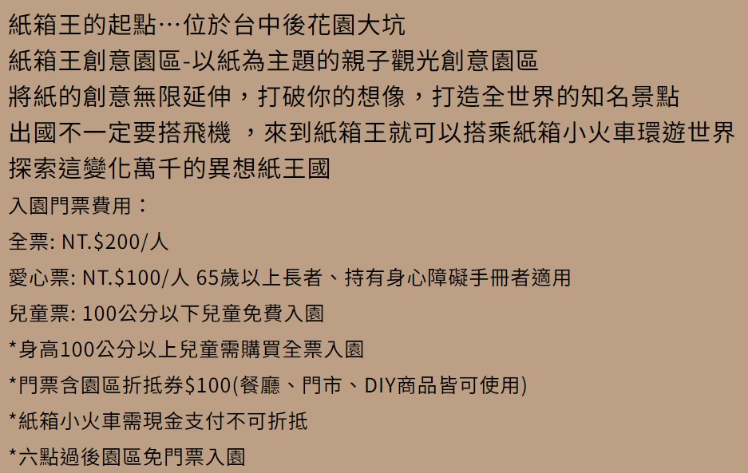
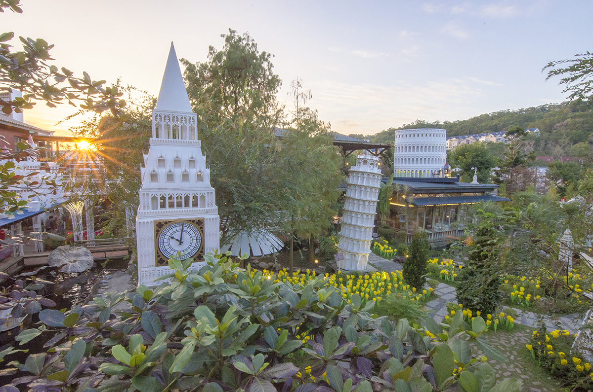
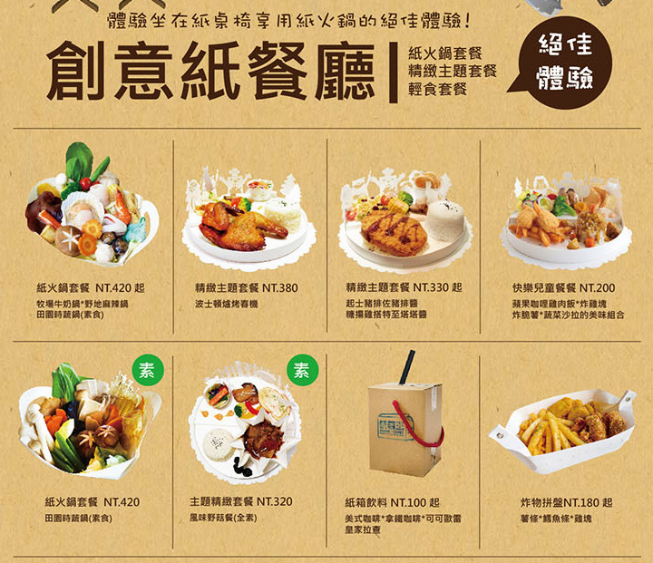
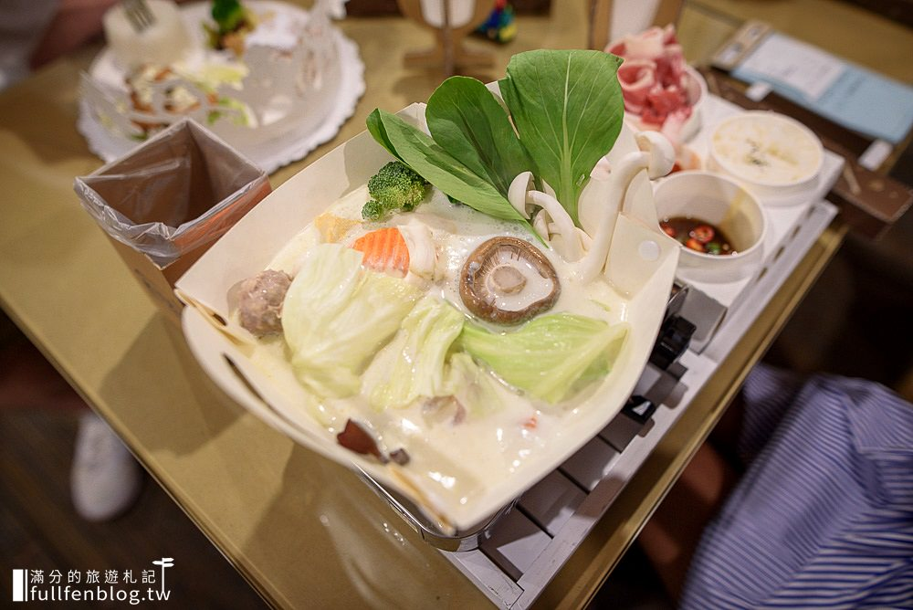

台中市北屯區東山路二段二巷2號(近大坑圓環)
電話：04-22398868
營業時間：全年無休
| 園區營業時間: 平日09:00 ~ 19:00
| 假日(例假日) 09:00 ~ 21:00 (7點過後僅餐廳/糸氏咖啡/紙箱小火車 營業) *六點過後免費入園

台中大坑紙箱王創意園區比想像中的還有趣啊，紙雕花園、紙火車、紙餐廳、天空步道、溜滑梯等豐富設施，情侶親子來都能玩得不亦樂乎。紙箱王門票200元，但可以折抵100元紙箱王商品、餐點等園區消費，不算太貴；拿來換紙箱王菜單最熱門的紙火鍋，或超有特色的紙箱飲料都很划算，令人嘆為觀止的紙藝世界等你來探險囉～



